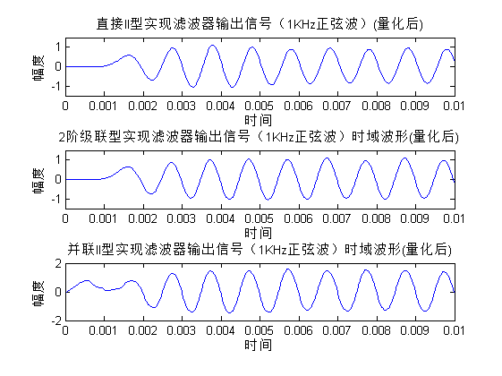

clear;clc;clf;
prv_digit = 2;
fs = 30000;
f_sqr = 1000;
t = 0:1/fs:0.01;
sqr = square(2*pi*f_sqr*t);
sqr_qtz = round(sqr*10^prv_digit)/10^prv_digit;
Wp = 1100/(fs/2);
Ws = 1800/(fs/2);
Rp = 2;
Rs = 60;
[N,Wn] = buttord(Wp,Ws,Rp,Rs)
[num,den] = butter(N,Wn);
N =
15
Wn =
0.0763
num_ = num*10^8.19;
den_ = den*10^8.19;
num_qtz = round(num_*10^(prv_digit))/10^(prv_digit);
den_qtz = round(den_*10^(prv_digit))/10^(prv_digit);
y_dir_II = filter_direct2(num_qtz,den_qtz,sqr_qtz);
[sos,g] =tf2sos(num,den);
num_cas = [];
den_cas = [];
for ii = 1:length(sos)
row = sos(ii,:);
num_cas = [num_cas;row(1:3)];
den_cas = [den_cas;row(4:6)];
end
num_cas_qtz = round(num_cas*10^prv_digit)/10^prv_digit;
den_cas_qtz = round(den_cas*10^prv_digit)/10^prv_digit;
y_2nd_cas = filter_direct2(num_cas_qtz(1,:),den_cas_qtz(1,:),sqr_qtz);
for ii = 2:length(num_cas_qtz)
y_2nd_cas = filter_direct2(num_cas_qtz(ii,:),den_cas_qtz(ii,:),y_2nd_cas);
end
y_2nd_cas = y_2nd_cas*g;
[k, num_para, den_para] = dir2par(num,den);
num_para_qtz = round(num_para*10^prv_digit)/10^prv_digit;
den_para_qtz = round(den_para*10^prv_digit)/10^prv_digit;
y_para_II = filter(num_para_qtz(1,:),den_para_qtz(1,:),sqr_qtz);
for ii =2:length(num_para_qtz)
y_para_II = y_para_II + filter(num_para_qtz(ii,:),den_para_qtz(ii,:),sqr_qtz);
end
y_para_II = y_para_II + k*sqr_qtz;
y_dir_II_qtz = round(y_dir_II*10^prv_digit)/10^prv_digit;
y_2nd_cas_qtz = round(y_2nd_cas*10^prv_digit)/10^prv_digit;
y_para_II_qtz = round(y_para_II*10^prv_digit)/10^prv_digit;
y = filter_direct2(num,den,sqr);
err_dir_II_qtz = mean((y_dir_II_qtz-y).^2);
err_2nd_cas_qtz = mean((y_2nd_cas_qtz-y).^2);
err_para_II_qtz = mean((y_para_II_qtz-y).^2);
disp('quantization error:');
fprintf('\tusing direct II relization:\t\t\t\t%d\n',err_dir_II_qtz);
fprintf('\tusing second-order cascade relization:\t%d\n',err_2nd_cas_qtz);
fprintf('\tusing parallel II relization:\t\t\t%d\n',err_para_II_qtz);
quantization error:
using direct II relization: 8.062761e-002
using second-order cascade relization: 3.765025e-002
using parallel II relization: 5.466968e-002
figure(1);
subplot(2,1,1);
plot(t,sqr);
title('1kHz方波信号时域波形(量化前)');
xlabel('时间');
ylabel('幅度');
axis([t(1) t(length(t)) -1.5 1.5]);
subplot(2,1,2);
plot(t,sqr_qtz);
title('1kHz方波信号时域波形(量化后)');
xlabel('时间');
ylabel('幅度');
axis([t(1) t(length(t)) -1.5 1.5]);
figure(2);
subplot(3,1,1);
plot(t,y_dir_II_qtz);
title('直接II型实现滤波器输出信号（1KHz正弦波）(量化后)');
xlabel('时间');
ylabel('幅度');
axis([t(1) t(length(t)) -1.5 1.5]);
figure(2);
subplot(3,1,2);
plot(t,y_2nd_cas_qtz);
title('2阶级联型实现滤波器输出信号（1KHz正弦波）时域波形(量化后)');
xlabel('时间');
ylabel('幅度');
axis([t(1) t(length(t)) -1.5 1.5]);
subplot(3,1,3);
plot(t,y_para_II_qtz);
title('并联II型实现滤波器输出信号（1KHz正弦波）时域波形(量化后)');
xlabel('时间');
ylabel('幅度');
figure(3);
y_dir_II_no_qtz = filter_direct2(num,den,sqr_qtz);
plot(t,y_dir_II_no_qtz);
title('直接II型实现滤波器输出信号时域波形(输入输出信号，滤波器参数均不量化)');
xlabel('时间');
ylabel('幅度');
figure(4);freqz(num,den,1024,fs);
title('IIR 滤波器量化前频率相应');
figure(5);freqz(num_qtz,den_qtz,1024,fs);
title('IIR 滤波器量化后频率相应');
